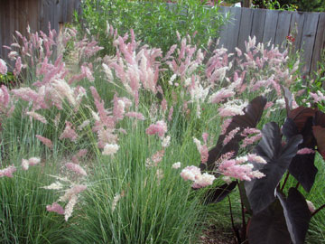
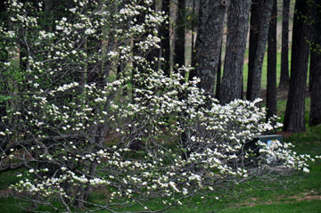
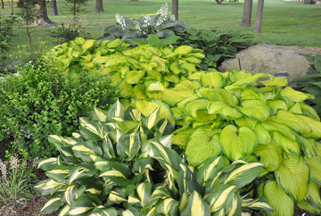

Gardening Matters
Welcome, fellow gardeners. My name is Cosie Simmons, the owner of Blooms & Bulbs. My passion has always been my gardens. Ever since I was a small child, I was drawn to my back yard where all varieties of beautiful plants flourished. A lush carpet of thick grass bordered with graceful beds is truly a haven for all living creatures. With proper planning and care, your gardens will draw a variety of birds and butterflies and become a great pleasure to you.
Gardening Issues
There are several areas to concentrate on when formulating your landscaping plans. One is your grass. Another is the number and variety of trees you plant. The third is the combination of plants you select. All of these decisions should be considered in relation to the climate in your area. Be sure and check out our gardening tips before you begin work.
Grass
Lawn experts classify grass into two categories: cool-climate and warm-climate. The northern half of the United States would be considered cool-climate. Examples of cool-climate grass are Kentucky bluegrass and ryegrass. Bermuda grass is a warm-climate grass. Before planting grass, whether by seeding, sodding, sprigging, or plugging, the ground must be properly prepared. The soil should be tested for any nutritional deficiencies and cultivated. Come by or call to make arrangements to have your soil tested. When selecting a lawn, avoid letting personal preferences and the cost of establishment be the overriding factors. Ask yourself these questions: What type of lawn are you expecting? What level of maintenance are you willing to provide? What are the site limitations?
Trees
Before you plant trees, you should evaluate your purpose. Are you interested in shade, privacy, or color? Do you want to attract wildlife? Attract birds? Create a shady play area? Your purpose will determine what variety of tree you should plant. Of course, you also need to consider your climate and available space. Shape is especially important in selecting trees for ornamental and shade purposes. Abundant shade comes from tall trees with long spreading or weeping branches. Ornamental trees will not provide abundant shade. We carry many varieties of trees and are happy to help you make your selections to fit your purpose
Plants
There are so many types of plants available that it can become overwhelming. Do you want border plants, shrubs, ground covers, annuals, perennials, vegetables, fruits, vines, or bulbs? In reality, a combination of several of these works well. Design aspects such as balance, flow, definition of space and focalization should be considered. Annuals provide brilliant bursts of color in the garden. By selecting flowers carefully to fit the conditions of the site, it is possible to have a beautiful display without an unnecessary amount of work. Annuals are also great as fresh and dry cut flowers. Perennials can greatly improve the quality of your landscape. Perennials have come and gone in popularity, but today are as popular as ever. Water plants are also quite popular now. We will be happy to help you sort out your preferences and select a harmonious combination of plants for you.